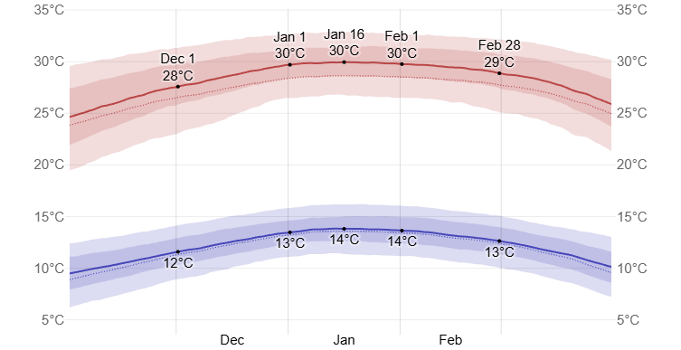

Transportation Options
Red Bus
There is an intermodal route that goes from the airport to the Pajaritos metro station (Line 1).
More information.
Tur Bus and Centropuerto Bus
You can take the Tur Bus and Centropuerto buses. They leave from the airport and drop you off in the city center and cost around $2,000 one way ($2 USD or EUR).
You can check the information on their web pages:
Tur Bus or
Centropuerto.
Transfer
You can hire a transfer from the airport to the hotel, e.g. Transvip.
More information
Taxi
There are official taxis just before you exit.
More information.
At the airport, Uber cars and similar applications are not allowed.
Transportation in Santiago
Santiago has a very modern public transportation system that can be used as the main way to move around the city.
Public Transport Network Red
To get around Santiago's integrated transport network, called Red, you must buy a Bip Card. You can get one at the metro stations and it costs 1.6 USD or EUR. Each one-way ticket costs between 710-830 CLP (0.7-0.8 USD or EUR), depending on rush hours. One ticket allows you to make connections. For more details, see the
Red website. Check the routes Here.
Taxi
In case you need to take a taxi, use only the authorized ones.
Weather
Daily high temperatures are around 29°C (84°F), rarely falling below 23°C (73°F) or exceeding 33°C (91°F). The highest daily average high temperature is 30°C (86°F) on January 17.
Daily low temperatures are around 13°C (55°F), rarely falling below 9°C (48°F) or exceeding 16°C (61°F). The highest daily average low temperature is 14°C (57°F) on January 14.
For reference, on January 16, the hottest day of the year, temperatures in Santiago typically range from 14°C to 30°C (57°F to 86°F), while on July 24, the coldest day of the year, they range from 3°C to 15°C (37°F to 59°F).

ATM and Currency Exchange
There are ATM machines (Redbanc) all over the city, including the airport. You can exchange money at the airport, in banks, or at Casas de Cambio (currency exchange offices). Note that Casas de Cambio generally have better rates than banks. Banks are usually open from 9:00 to 14:00. The Casas de Cambio are usually open from 9:30 to 18:00. For currency conversions, please visit XE Currency Converter.
Note that if you want to cash a cheque you will be asked to show your passport. In order to cash a Chilean cheque, you need to sign vertically across the front side of the cheque and write your passport number on the reverse side.
Credit or Debit dilemma
Most of the shops in Santiago will accept payment by card and they would usually ask: "Débito o Crédito" (Debit or Credit).